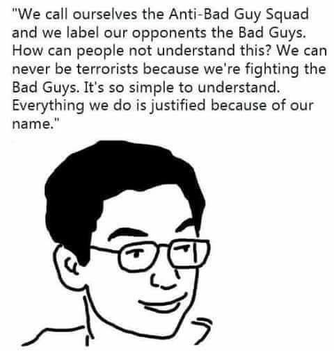
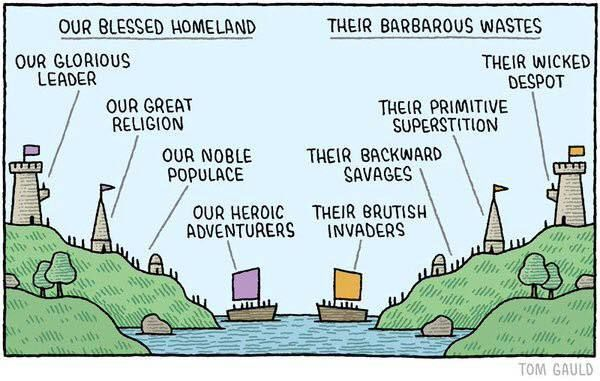

Post-Overton And Selfishness FAQs
Table of Contents
- 1. Introduction (Start Here)
- 2. Definitions
- 3. General Questions
- 3.1. Where does morality come from?
- 3.2. How has evolution affected human morality?
- 3.3. Do you view humans to simply be a biological species, like any other?
- 3.4. Why are consequentialist ethics better than deontological ethics?
- 3.5. Aren’t technological advancements in the standard of living driven by improving morality?
- 3.6. Surely everybody wants to live in a prosperous, technologically-advanced society, right?
- 4. Subjectivity/Objectivity Questions
- 4.1. Why isn’t morality objective?
- 4.2. Why can’t the human ability to reason be the basis for objective morality?
- 4.3. Why is it dangerous to have a black-and-white sense of morality?
- 4.4. Why are contract-ethics and cooperation not objectively moral?
- 4.5. Isn’t historical moral progress evidence that morality is objective?
- 4.6. Isn’t it an appeal to the people fallacy to argue for societies based on consensus?
- 4.7. Isn’t it a subjectivist fallacy to insist that morality is perspective-dependent?
- 5. Selfishness Versus Altruism Questions
- 5.1. Wouldn’t a more coherent definition of the word “selfishness” be “pursuing your own interests at the expense of others”?
- 5.2. Isn’t Altruism part of human evolution?
- 5.3. Doesn’t helping out your friends and family count as altruism?
- 5.4. Shouldn’t we help everybody?
- 5.5. Isn’t it misguided to have such a cynical view of human nature?
- 5.6. Why should we be selfish?
- 5.7. Isn’t Altruism integral human civilization?
- 6. Libertarian Questions
- 7. Miscellaneous Questions
- 8. How Does Technology Create The Illusion Of Moral Progress?
- 9. When Life Becomes Zero-Sum
Note: I haven’t finished writing this file yet.
1. Introduction (Start Here)
Many of the questions on this page address the same objections and misunderstandings, so it will feel repetitive and redundant to read all the questions and answers on this page. If you would like to read an actual essay explaining what morality is, then we recommend reading: What is morality?
Summary of this Ethical Philosophy:
- Morality depends on value, and value is perspective-dependent. There is no objective foundation for value. Likewise for morality.
- Morality is mainly determined by evolution and memetic traditions and fashions.
- Every purported example of altruism occurring in nature is actually selfishness.
- It’s unreasonable to oppose natural phenomena that are beyond mankind’s control. For example, it’s unreasonable to oppose hierarchy because social hierarchies are natural and they’re often strongly influenced by people’s genetics, which we cannot change. For similar reasons, it’s also pointless to oppose violence in nature, to oppose the existence of life (efilism), or to be vegan if it’s necessary for humans to eat animals in order to be healthy.
- “Moral Progress” is an illusion that is primarily created by the advancement of technology.
- Without cooperation, life becomes zero-sum when the population reaches the carrying capacity of its environment.
Note: Given that there are so many diverse ideas, viewpoints, and moral philosophies that a random person could have about morality, it’s likely that only a fraction of these FAQs will answer any random people’s questions or beliefs about morality. But many of these questions are discussed often, and it’s convenient for other pages on this website to link to these questions and explanations when relevant, hence why this page exists.
2. Definitions
For clarity, these are the definitions that will be used throughout this FAQs post:
- Morality (subjective)
- What a person believes is “right” and “wrong” according to their values. Note that “morality” has many different definitions, so it is highly vulnerable to the Sapir-Whorf Effect.
- Morality (colloquial)
- The intersubjective consensus (within some group of people) of “right” and “wrong”, usually formed according to the collective values.
- Morality (platonic)
- The conception that morality has a platonic realm that everybody should try to follow. This does not exist in reality.
- Post-Overton
- The philosophical position that game theory, the intrinsic selfishness of life, and memetics are the best way to understand morality. It is similar to moral relativism since it posits that morality can only be based on subjective values (which are perspective-dependent), but it’s different since it also embraces the game-theoretic assumptions of selfishness and rationality, as well as the zero-sum nature of life. Post-Overtons believe that the only legitimate rights are legal rights.
- Post-Moralism
- The same thing as Post-Overton, but with a different name.
- Amoralism
- i
- Moral Objectivism
- i
- Moral Relativism
- i
- Moral Nihilism
- i
- Moral Realism
- i
- Good
- i
- Evil
- i
- Selfishness
- Acting for your own benefit, regardless of others.
- Altruism
- Acting for the benefit of other, at some cost to oneself.
- Cynicalism
- Selfishness, except that you take what you can, and give nothing back. A cynical person does not use a moral accounting system, nor are they interested in cooperating during a prisoner’s dilemma.
- Note: We are aware that we are defining Cynicalism in a non-standard way, but we are doing so because we believe that the most common definition of “Cynicalism” is too closely related to the definition for “Selfishness”, and we think that “Cynicalism” would be better used to convey a shade of meaning that most people tend to mistakenly associate with the headword “Selfishness”. By explicitly defining “Selfishness” and “Cynicalism”, we can contrast the two definitions to show what “Selfishness” is not what most people think it is.
- Moral Accounting System (MAS)
- The system of emotions in a human’s brain (and some other species’ brains too) that motivates people to do give-and-take behavior, or exchanges of labor. Evolution caused the MAS to develop in humans since they are more reproductively successful when they engage in give and take behavior within human tribes. The MAS is the primary reason why people are not cynical, and the behavior that MASs encourage does not count as “reciprocal altruism” since “reciprocal altruism” is an oxymoron.
- Collaboration/Cooperation
- When rational individuals work together for mutual benefit. When people are collaborating, the group is never places above the individuals for the sake of the group. Cooperation requires trust (the expectation of reciprocity), and every individual who collaborates does so with the expectation that they will get something in return.
- Collectivism
- When individuals place the collective above the individual for the sake of the collective.
- Utopian Ideology
- Any naive ideology that people will believe in order to claim moral superiority and maintain the illusion of knowledge. Utopian Ideologies typically use the Rhetoric of Exploitation, simple-minded worldviews, moral narratives, visionary fantasies, and effective memetic propagations to delude people and spread the ideology. Read more: Utopian Ideology
- The Rhetoric of Exploitation
- A Classic Tactic used by Utopian Ideologists to replace rationalist thinking with rhetoric and self-righteous nonsense. The key is to use selective metaphors and phrases and portray the “oppressors” as having agency and the “victims” as having no agency. Read more: The Rhetoric of Exploitation
- Meme
- i
- Memetic System
- i
- Tradition
- i
- Fashion
- i
3. General Questions
3.1. Where does morality come from?
Morality originates from one’s personal values, in a 5-step processed described at this link: What is Morality?
3.1.1. How is morality related to memetic traditions?
To a large extent, culture is arbitrary. But it is also the case that many customs and taboos originated because they helped increase the reproductive success of the people who practiced them, in which case they would be known as traditions.
Over time, many of these traditions and taboos came to be collective values of the practicing cultures, and a substantial basis for what is “moral” and “immoral”. The traditions then propagate onto the next generations via the individual internalization of collective values for every individual.
More Information: What is Morality? - Blithering Genius
3.2. How has evolution affected human morality?
- Evolution selected for egoism and selfishness over altruism. Hence, altruism is a losing reproductive strategy whenever there is a competing pro-selfishness strategy.
- Since mutual cooperation among selfishness individuals enables each individual to gain more than if they each worked alone, humans have evolved a moral accounting system to keep track of what they owe and what they are owed from their respective communities.
- Humans have a natural intuition that life is good and life should be preserved in many cases, even when it’s not very practical (e.g. pro-lifers being against abortion, people against death penalties, people against suicide, assisted suicide, or even suicide with dignity, etc).
- Humans are more likely to favor their children, spouses, family, friends, and other people in their social networks and communities over outsiders, in terms of perks, special advice/tips/tricks, and goods (cronyism/tribalism/favoritism).
- Humans are tribalistic, and develop their own internal labels for who to designate within their in-groups and out-groups.
- Humanists view love as sacred, even though it doesn’t exist merely to make humans feel good. Likewise, people may feel spiteful and vengeful when their partners cheat or break up with them. Regarding cheating, this implicitly causes humans to value consent.
- Many humans favor utilitarian and hedonistic ideologies, although they may be less inclined to favor those if they became post-overton and/or recognized evolution’s applications to human nature.
- Going beyond this point, this also affect the human intuitions of how rewards and punishments should work.
- The necessity of human societies in the modern world (and lack of understanding of evolutionary reasoning) has caused people to adopt altruistic moralist ideologies, whose adoptions are further amplified.
- Humans have grown to dislike loneliness and favor being in communities and groups.
- Humans will tend to justify themselves, even if doing so is hypocritical or wrong from the collective moral perspective.
- Human have developed a complex range of emotions. Two such emotions are hate and anger. Even self-identified humanists and other utopian ideologists who live in peaceful societies have an intentionally ignored and unrecognized evolutionary desire to hate and be mad at some people. But their ideology leaves few people left to hate, so they hate Nazis and other people they perceive to be “backwards” or “ignorant” and will even expand the definitions of people who can fall into those groups so that they have more people to release their natural hatred and anger against.
- The negative consequences of technology are not viewed as humiliating because technological progress is viewed as necessary (albeit technology is more of a memetic thing). The humiliation faced by people who get laid off, put out of business, or whose professions become obsolete is ignored in favor of the technological progress of society. Similarly, society views it as moral to forcibly educate children in public schools about curriculum that they hate, because it’s viewed as necessary for the modern world.
Read More: Evolution and Morality - Blithering Genius
3.3. Do you view humans to simply be a biological species, like any other?
Yes. Humans cannot transcend evolution, and just because humans have lots of technology and are the most intelligent form of life ever known to have existed, that doesn’t mean that humans aren’t susceptible to the same population dynamics and other biological realities that all other animals must face. It is still the case that genes are largely responsible for predetermining every person’s destiny, that whoever has the most children is destined to have their genes become more common in the future, and that human populations have the potential to exceed their carrying capacities to the point of causing war, disease, and famine in order to decrease their populations.
3.4. Why are consequentialist ethics better than deontological ethics?
Some people view morality as a list of rules that shall never be violated. The justification at a macro-level is that these rules have consequences that cannot be considered at a micro-level. To put this in perspective, let’s take the example of lying. If a drug addict lies to a police officer about the presence of cocaine in his house, he can avoid getting arrested. But if too many people lie, then people won’t trust each other. Here the micro level concern is getting arrested, and the macro level concern is social trust.
Deontology needlessly elevates the value of rules over the consequences of them. Rules cannot be reasonably formed without some sort of appeal to consequence, because it’s not possible to judge a value without another value to judge it by. When rules and values are made without appreciating the consequences of them, they become arbitrary and shitty. For example, you can’t explain why a rule saying that a man can have sex with whichever women he wants is a bad rule without an appeal to the consequences of that rule. You could argue that the first rule violates the autonomy of the women. However, you would need to justify why women are entitled to a certain amount of autonomy, which requires appealing to the consequences of implementing that autonomy. In these scenarios, the appeal of the Non-Aggression comes from reducing the amount of coercion that occurs. If the justification for the NAP ultimately appeals to consequences, then why not evaluate the actions and specific rules you make based on the consequences themselves rather than some general rule that doesn’t always work out?
It is true that rules are important for setting precedents. If people stole and pirated whenever they want in a society, people would be less incentivized to create wealth, which is a net negative. On the other hand, respecting private property creates a macro-level effect of encouraging wealth because people will think it won’t be stolen. However, would 10 acts of fraud intended to fund research into embryo selection be ethical? I would say yes – you increase the amount of utility in the society without severely damaging the precedent of private property. 10 acts of fraud are the kind of crime that makes the papers for a few days until people forget about it, rather than something that seriously undermines people’s trust.
Sure, people frequently engaging in actions that break rules would undermine the precedents that these rules uphold. However, there are clearly violations of rules that don’t break the precedent they set. Let’s take private property as an example. When people having a right to property, that incentivizes them to protect it and create more value. Taxing people at the threat of incarceration would be a violation of private property. However, if these taxes are used for institutions that help uphold private property, then there is no moral objection to it as they are massively preventing the very thing they are violating.
3.5. Aren’t technological advancements in the standard of living driven by improving morality?
No, this is backwards. “Moral progress” is an illusion, and the illusion is created by technological advancements.
3.6. Surely everybody wants to live in a prosperous, technologically-advanced society, right?
Contrary to popular belief, not everybody wants to live in a technologically-advanced society where everybody lives harmoniously with each other. Many people assume that everybody wants exactly this, and that this implies the existence of an objectively-correct morality, but there are some notably interesting ideologies that oppose it, so it would be a logical and philosophical mistake to assume that this is a universal moral premise that everybody has.
Anybody who assumes this has not thought enough about the philosophical nature of problems, how and why problems arise, nor have they questioned the best type of well-being (form of utilitarianism). Two such counter-examples ideologies that disagree with this popular and naive premise are Efilism and Anarcho-Primitivism.
Efilists disagree because they believe in absolute [negative-utilitarianism] that not even the existence of the smallest quantity of pain can ever be morally justified. Efilists recognize that wherever life exists, problems will never go away. Efilists thus believe that the most morally correct thing to do would be to eliminate all life so that problems will stop existing forever.
It is also naive to believe that technology is the solution to all problems. It is literally impossible for life to exist without problems, because once again, problems will never go away for as long as life continues to exist. That being said, Anarcho-Primitivists (Anprims) believe that technology causes more problems than it solves.
Both of these ideologies have their short fallings, but in some ways, these two ideologies are more enlightened than the conventional Humanist worldview of the West. There might even be more ideologies that oppose this premise than just the two counter-examples that I have mentioned here, but the bottom line is that since not everybody agrees that a harmonious, technologically-advanced society would be a utopia where maximal morality is achieved, the premise that everybody wants to achieve that cannot be assumed as a basis for objective morality.
4. Subjectivity/Objectivity Questions
4.1. Why isn’t morality objective?
This FAQs page disproves many arguments in favor of objective morality, but for an essay-style format, we recommend reading: What is morality?
4.2. Why can’t the human ability to reason be the basis for objective morality?
This assumption relies on a misunderstanding of how reason and knowledge work.
It can be tempting to conclude that morality is based on rationality since it’s possible for values to contradict each other, to be based on false or unquestioned assumptions, and/or to be justified by fallacious reasoning. If some value systems are contradictory and others are not, that should imply that some moral systems are better than others, right? It does, but reason alone is still not sufficient for building an incontrovertible moral foundation. There is no uniquely rational way to define value philosophically since values depend on other values.
It’s a mistake to assume that values can be based on sensory knowledge instead of emotional knowledge. Values can be coordinated with reason, but reason and sensory knowledge alone cannot form an objective basis for morality.
There’s also no such thing as “pure reason” because reason is constrained by sense perception, and omniscience is impossible. It’s always possible for reason to be wrong.
Read More: Reason is Not the Basis for Morality - StateOfTheNihil.
4.3. Why is it dangerous to have a black-and-white sense of morality?
It is also a huge mistake to view morality as black and white. Even if morality were objective, there’s always more ways to be wrong than there are ways to be right, so anybody who thinks that they are abiding by supposedly objective moral standards is probably wrong. Many people would also use their belief that they are imposing the one and only true “objective” morality as a justification to rule with an iron fist.
4.4. Why are contract-ethics and cooperation not objectively moral?
If cooperating together was the objectively best choice, i.e. it offers the greatest individual reward for each player and defection is guaranteed to not happen, then prisoner’s dilemmas wouldn’t exist at all in the first place. Conversely, if prisoner’s dilemmas didn’t exist, then there would be no inquiry as to why someone would choose anything less than the option with the greatest potential reward and what can be done to achieve that.
4.5. Isn’t historical moral progress evidence that morality is objective?
No. The creation of “Moral progress” is an illusion. Most “improvements” in moral progress are only really just advancements in technology.
4.6. Isn’t it an appeal to the people fallacy to argue for societies based on consensus?
No, Appeal to the People might be a valid fallacy for epistemological or scientific reasoning, it’s not a legitimate Fallacy when reasoning about ethical or political philosophy. Epistemology and Science are based on sensory knowledge, whereas Ethics and Politics are based on emotional/value knowledge. If anything, it is a Fallacy here by trying to apply sensory knowledge outside of its scope of appropriate use.
4.7. Isn’t it a subjectivist fallacy to insist that morality is perspective-dependent?
No, this lacks an understanding about the epistemological limits of human reasoning. Epistemology and Science are based on sensory knowledge, whereas Ethics and Politics are based on emotional/value knowledge. If anything, it is a Fallacy here by trying to apply sensory knowledge outside of its scope of appropriate use.
5. Selfishness Versus Altruism Questions
5.1. Wouldn’t a more coherent definition of the word “selfishness” be “pursuing your own interests at the expense of others”?
No, not at all. Consider the following dictionary entries:
- Wiktionary defines selfishness as: The quality of being selfish; the condition of putting one’s own interests before those of others.
- Merriam Webster defines selfishness as: The quality or state of being selfish : a concern for one’s own welfare or advantage at the expense of or in disregard of others.
- Dictionary.com defines selfishness as: The quality or state of caring only for oneself or one’s own interests.
The phrases “regardless of others”, “without regard for others”, or “in disregard of others” all simply mean that you are concerned with yourself, and not concerned with other people. In other words, you are acting for your benefit, not theirs. On the other hand, a prepositional phrase like “at the expense of others” has very different semantics since it would imply that you can only benefit yourself if others are negatively affected by your actions.
5.2. Isn’t Altruism part of human evolution?
No, it isn’t. All of the so-called examples of altruism in human evolution are misunderstandings of how evolution actually works:
- Debunking the Selfish Gene by T. K. Van Allen
- Altruism and Selfishness
- Bees are not Altruistic
- Pathological Altruism
- Family, Transfers of Energy, and Exchanges of Labor
If anything, altruism is self-defeating, and any attempt to establish altruism in nature would be quickly erased as soon as evolution takes back the helm and reinstates selfishness. Altruism cannot evolve, due to the free-rider problem.
5.2.1. What about Reciprocal Altruism?
If Altruism is defined as “acting to benefit others”, then Reciprocal Altruism is an oxymoron. If it’s guaranteed that you’re going to get helped back, then it’s not really altruism. It’s selfishness and cooperation.
5.2.2. What about Kin Selection Theory providing a basis for Altruism?
Main Article: Why Kin Selection Theory is Wrong.
The nutshell summary is that:
- Parents care for their children because they have strong selfish incentives to do so for their own reproductive success,
- Kin altruism between siblings is best explained as the parents’ selfish behavior being expressed in the children as part of their extended phenotype (cooperative children are easier to raise than non-cooperative children),
- Stotting/pronking is a demonstration to predators to try catching someone else in the herd that is obviously less physically fit than the pronker, and
- Friends helping friends is cooperation motivated by selfish interest and the moral accounting system, not “reciprocal altruism” (which is oxymoronic since altruism is selfless).
- Other purported examples of kin altruism can be further debunked on a case-by-case basis.
5.2.3. Aren’t worker ants and worker bees examples of altruism existing in Nature, since they can’t reproduce and thus only work for the good of their species?
It is true that worker bees and worker ants can’t reproduce, but once again, this is a misunderstanding of how evolution works in haplodiploid species like ants, bees, and wasps. Evolution is selecting for the genes of the Queens, not the worker ants. The Queen has control over which eggs get fertilized with sperm stored from mating, so the drones are pure extensions of the Queen because they only carry her genes. A male’s genes are from its mother, a worker’s genes are from its mother and its father’s mother. In bees and ants, all genes pass through a female body at least every second generation. Usually, that female body was a Queen. This means that all ant genes are selected for their ability to help Queens reproduce. Thus, this is not a case of altruism existing in Nature.
In other cases when organisms ostensibly sacrifice themselves for the survival of the species, they do so because it ensures the survival of their children, not their species, which increases their reproductive success. If organisms did sacrifice themselves for their own species, but not their children, then their genes would die out, and altruism would cease to exist within that species.
For more information, read: Bees are not Altruistic.
5.3. Doesn’t helping out your friends and family count as altruism?
Usually no, and this is also a misunderstanding of what true altruism actually is. When people are helping out their family and friends, they are typically doing transactions between their moral accounting systems.
5.4. Shouldn’t we help everybody?
No, it’s a Fallacy of Composition to assume that being able to help others implies that we can collectively help the entire world. Altruism is not sustainable in nature. At most, we can help people who are likely to help ourselves, and that is the natural limit to which people can sustainably help others.
5.5. Isn’t it misguided to have such a cynical view of human nature?
We don’t equate selfishness to “cynicalism”, hence why we define the two differently. If someone is selfish, then they are prioritizing the pursuit of their self interests first and foremost, but they will often have to obey their moral accounting systems as a means to an end.
We define cynicalism as being selfish, except that you don’t adhere to your moral accounting system. If someone helps out a cynical person, the cynical person would accept the help, but then they wouldn’t help the helper back, which would incentivize the helper to not help the cynical person in the future.
5.6. Why should we be selfish?
Because we have no other choice. We can only do what we want to do, so in that sense, we’re always being selfish. Some people might want to be nicer than others, and some might want to be cruel. Regardless, all voluntary acts are based on desires.
Desires are not chosen. A serial killer chooses to kill, but does not choose to want to kill. Likewise, a philanthropist chooses to help the poor, but does not choose to want to help the poor. Both are acting on their desires. Both are psychologically selfish.
Life also evolved to be selfish. Altruism cannot evolve due to the free-rider problem.
5.7. Isn’t Altruism integral human civilization?
No, not at all. Collaboration, Cooperation, and Selfishness are integral of human civilization, not Altruism and Collectivism.
Even if people were altruistic, the calculation problem (Hayek) makes altruism untenable. You have the knowledge to act selfishly, but not the knowledge to act altruistically.
Furthermore, every altruistic civilization is doomed to fail.
5.7.1. The difference between cooperation versus collectivism
First, we have to define collectivism: when individuals place the collective above the individual for the sake of the collective.
Next, we have to define cooperation. Cooperation is when rational individuals work together for mutual benefit as a way to achieve their self-interests, however, they never place the group above the individuals for the sake of the group. Cooperation requires trust (the expectation of reciprocity), and every individual who collaborates does so with the expectation that they will get something in return.
Typically, most collectivists will take examples of cooperation and erroneously classify those examples as situations where collectivism is a good thing, in order to promote actual instances of collectivism, such as socialism, pious religions, and authoritarianism. When collectivists frame cooperation as collectivism, they often portray it as being based on empathy or affection instead of trust since they don’t understand that cooperation is based on selfishness.
6. Libertarian Questions
6.1. Isn’t the Libertarian Non-Aggression Principle (NAP) the objective origin of morality?
6.2. But there’s no such thing as a necessary evil.
This question assumes that “evil” is well-defined and objective, but it isn’t. It also assumes that humans should act according to deontological ethics.
6.3. Why isn’t morality the same thing as “universally preferable behavior”?
Because moral preferences depend on perspective.
For example, most people in Japan, the United States, and Europe view the Assassination of Shinzo Abe to be a “morally bad” thing since they like Japan, but most people in China and Korea view his assassination to be a “morally good” thing because they hate Japan. If it was truly the case that it is “universally preferable” to condemn murder, then why are there hundreds of millions people who applaud the assassination and celebrate the assassin as a hero?
The following addresses a list of objections by someone who defines morality as “universally preferable behavior”.
Nobody can logically defend the position that NAP-violations can be morally good.
Of course they can. For the same reason why Libertarians can’t agree on whether abortion violates the NAP or not. Or how Libertarians can’t agree on whether blackmailing is NAP-compliant. Or how Ancaps may drop-kick people out who disagree with their interpretation of the NAP. The bottom line is that “Aggression” is subjective, so the NAP is also subjective.
Only creatures that have the mental capacity to conceive of abstract rules can be bound and protected by said rules - and only if they reciprocate.
That is very arbitrary. By the same logic, a newborn infant or a person with severe dementia may not be protected by the Libertarian NAP if they lack the mentally ability to understand it. Most people would disagree and insist that those humans deserve the same legal protections as more mentally capable humans.
In moral terms, the only important criteria is if they’re able to understand and reciprocate rules. Moral rules, if they exist, are a subset of these that ought to be universally upheld.
According to who, and why? For starters, this claim doesn’t make any sense since your definition of morality has been easily debunked.
“Modern moral theory says you aren’t obligated to help someone hanging off the edge of a cliff.
Modern Liberals disagree. Who’s to say that your beliefs are more correct than theirs, besides yourself?
Other species are not subject to the same moral protections as us, since they can neither conceive nor reciprocate moral norms.
If that’s true, then human babies, severely retarded people, and the mentally disabled elderly do not have the same legal protections as everyone else, which contradicts most people’s moral intuitions, at least in today’s world anyway. Though I am indifferent since I understand that literally nothing is objectively immoral.
Animals shouldn’t breed if there isn’t enough energy around to sustain themselves. Just like a mother is being cruel/evil if she has babies that she cannot feed.
And yet animals will still breed anyway irregardless. If there’s a famine and civilization collapses, the most reasonable thing to do from a biological/evolutionary/game-theoretic point-of-view is to take what you can and give nothing back. Because that is what will maximize your reproductive success. And all the organisms that follow that strategy will spread their genes to a greater extent, whereas the most altruistic ones who choose to have fewer offspring will have their kind die out. You don’t seem to understand biology or evolutionary theory very well…
“Humans aren’t fighting over the last bits of air, land, water, etc.
That’s literally what they’ve done all throughout modern history, with the main exception being the modern era.
Our competitions are chosen / voluntary.
No, they aren’t. If competition was truly voluntary, then there would be no competition at all because everyone would avoid it. One of the most fundamental principles of geopolitics is that selfish players (countries in this case) will compete against each other for scarce resources. And there are no permanent friends, only temporary allies for as long as the right conditions for cooperation hold true.
Having one more human born on this planet won’t hurt any existing human.
If it’s exactly one human, then probably not. But it isn’t. The world population is increasing by several tens of millions of humans every year. Only a fool would say that there’s no way this continuing trend could ever go wrong on a planet with finite resources. Unlimited population growth is unsustainable, and that’s what we’re heading towards.
The energies in our ecosystems aren’t that scarce.
Yes they are, and they always have been. And it will only become more apparent as the world population continues to grow. If that continues, all it will take is another major crisis or two to make the world’s food/resource supplies trip up and unable to keep up. Then you’ll catch a glimpse of how biological systems have always worked.
7. Miscellaneous Questions
7.1. The Meaninglessness of the Standpoint Theory of Truth
7.2. Why isn’t Utilitarianism the best way to define morality?
No. Utilitarianism is defined as maximizing “well-being”, and “well-being” is subjective. That’s why there’s many different types of Utiliarianism.
The Connection Between The Various Types Of Utiliarianism With The Various Types Of Hedonism
| Question | Mainstream | Efilism | Zero Contradictions |
|---|---|---|---|
| If Life Violent? | It shouldn’t be | Yes, and life is worse thing ever. | Yes, but this isn’t necessarily a “bad” thing. |
| Hedonism/Utilitarianism? | Positive & Negative Utilitarianism | Supremacy of Negative Utilitarianism | N/A, they balance out, and it’s subjective. |
| Altruism? | Yes. | Yes, absolutely. | No, because nature is intrinsically selfish. |
Most people and all Efilists are Utilitarians. The difference is that most people will assign some value to positive hedonism, whereas Efilists will assign either no value to positive hedonism or value it as completely subordinate to Utilitarianism (Positive Hedonism is only valuable if Negative Hedonism is satisfied). In addition, Efilists recognize that life is inherently violent.
Positive and Negative Utilitarianism only differ by the type of hedonism that they favor. Hedonism is not self-evident.
8. How Does Technology Create The Illusion Of Moral Progress?
“Moral Progress” is an illusion created by the advancement of technology. Without technology, we wouldn’t have seen any improvements in material conditions for humans. Historically, humans only started to care about moral progress when they no longer had to focus on just being able to survive 24/7, something that has only been made possible by the advent of technology. A human who is focused on survival 24/7 would never have any time to think nor care about what’s moral because they’re only focused on what helps them survive, as well as what helps their community survive since the community aids the survival. If humans had historically prioritize the morals that most people have in the modern world over their own survival, then their genes and memes would fail to make the next generation, compared to other humans who did.
Large-scale cooperation facilitated by Capitalism and the Rule of Law has made it possible for more people than ever to not have to live in abject poverty.
- The widespread adoption of vaccines and modern medicine has made it possible to eradicate many diseases that have historically plagued human societies.
- In modern post-WWII times, war has been quite uncommon compared to its historical presence, but this has only been made possible due to the establishment of improved living conditions around the world (thus reducing the need to compete for resources worldwide), free trade (which reduces conflicts between nations), and the intense favorability to avoid the gruesome potential for destruction and nuclear war that has never been seen before.
- Modern contraception and birth control made it possible to not have children born into undesirable conditions.
- The automobile relieved the pressure on land values and land rent by making it possible for people to move out of the cities and into the suburbs, although this has only been a temporary fix since the core problem has yet to be resolved by universal LVT.
8.1. Technological Changes That Various Moralists Would Claim To Be “Moral Progress”
The following is a list of changes enabled by technology that various moralists would claim to be “moral progress” according to their perceptions of the world.
- Vegan diets only being made possible since humans don’t rely on hunting and gathering anymore, clothing made from plants or plant materials instead of animal hides and fabrics, et cetera (according to vegans’ perspectives).
- Gender reassignment surgeries / sex change operations / hormone therapies that make it possible for gender dysphoric people to change their bodies to be more like the opposite sex and less like the biological sex that they were born to.
- Dating websites and dating apps have made it easier than ever for homosexuals and bisexuals to find a partner, and they are now the leading method for finding a partner in many parts of the world.
- Anti-natalists view contraception and abortion as some of the most important technological inventions ever.
- Capitalists view technology favorably because technology has caused capitalism to progress and improve people’s standard of living.
8.2. Future Moral Progress According To Various Ideologues
- The technological ability to create synthetic pills that could supply humans with necessary vitamins and minerals that can only be found in animals and not plants (some nutrition-conscious vegans have argued that this should replace eating animal products as the way to acquire those nutrients for humans and other necessarily omnivorous species).
- Ancaps often argue that their fantasy worlds will have amazing technologies like seasteading, blockchains, and more that will enable them to live in a super “ethical” utopia that has never been seen before. But if new/innovative technologies are necessary to make such utopias possible, then hypothetical “moral improvements” like the kinds alluded to by ancaps are only made possible by advancing technologies, as it has always been the case.
- Efilists believe that humanity should destroy the Earth and render it uninhabitable for all sentient life, but this never would have been possible in previous eras because the necessary technology for accomplishing this goal never existed prior to modernity.
- All kinds of Utopian Ideologists want to colonize Mars because it gives them something to work towards as a means of fulfilling their needs for the power process. They also because they perceive Mars as a place of opportunity and free of foreign interference to set up whatever so-called utopia and utopian ideology that they believe in. Examples:
- Ancaps who want Mars to be a so-called Ancapistan paradise.
- Communists and Anarcho-Communists who want Mars to be a so-called (Anarcho)-Communist paradise.
- Some Esperanto Speakers who would like Esperanto to become the language of Mars.
8.3. “Moral Progress” That Wasn’t Caused By Advancing Technology
- The replacement of monarchies by democracies.
- The abolition of many cruel punishments.
- The progression of human rights (e.g. freedom of expression, right to fair trial, etc).
- The decline of religious persecution, racial segregation, racism, sexism, homophobia, xenophobia, ableism, etc.
- The decline of European colonialism (it became too expensive to rule overseas colonies, and the local populations began protesting and fighting for independence). It should be noted however that European colonialism seems to have been mostly beneficial in most (but not all) cases since technologies caused declines in infant mortality rates, starvation, diseases, and other factors that have limited the local populations.
Interestingly, anarcho-primitivists are some of the few people who would argue that the progression of technology has actually caused a significant regression in moral progress, whereas virtually everyone else enthusiastically views technology as a way to continue “moral progress”. Besides anarcho-primitivists, some of the most extreme communists and socialists might would believe that humanity has not made much if any moral progress since they hate capitalism so much, even though capitalism has been largely beneficial for humanity.
9. When Life Becomes Zero-Sum
Without cooperation, life becomes zero-sum when the population reaches the carrying capacity of its environment. If either of those conditions are not meant (not possible to cooperate with others, or population is below environment’s carrying capacity), then life can be “positive sum”. The point in recognizing the conditions for life to be zero-sum is to show further evidence why morality is not objective. When life does become zero-sum, it’s every man for himself.
- For every prey that gets eaten alive, there is a predator who doesn’t starve to death.
- For every prey that escapes, there is a predator who ends up starving to death.
- For every guy who misses a job opportunity, someone else will get it instead.
- For every male that doesn’t get to mate with the prized female, some other victorious male does.
- For every slave, there is a slave owner who profits big time.
- For every guy who lost money on the stock market, someone else gained money because for every buyer, there is a seller and vice versa.
- For every guy who lost scarce, precious resources, someone else acquired those valuable resources and used them to survive another day, become more reproductively successful, and have more offspring than the loser.
- And so forth.
When there are winners who can only come at the expense of losers, it’s in everyone’s self-interest to be a winner rather than a loser. In such cases, people are not obligated to care about whether that causes someone else to incur negative consequences. Evolution is the game that runs literally everything, so that’s the game everybody has to play, even if it comes at the cost of others.
Now, life doesn’t always have to be a zero-sum game. When individuals cooperate with each other, they can both become better off if they manage to solve the prisoner’s dilemma between each other. Unfortunately, it isn’t always guaranteed that the other side won’t defect, and that’s why cooperating is not an objectively good choice.

